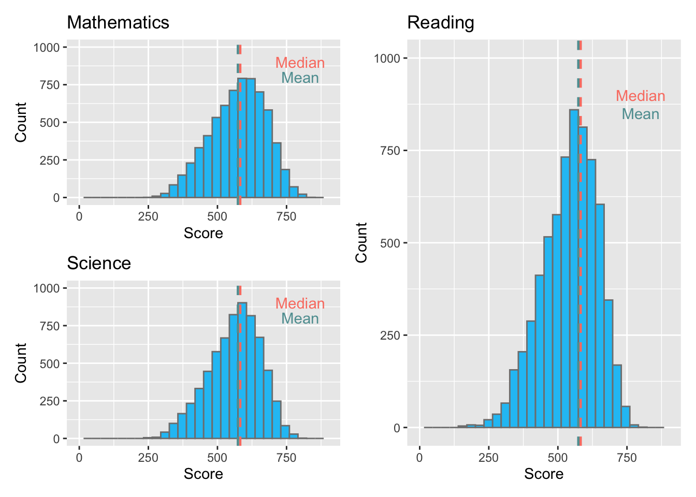
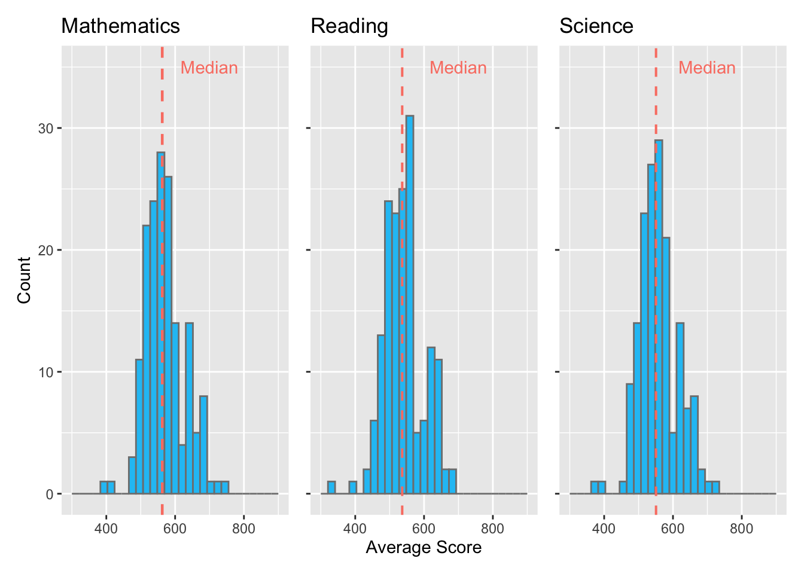
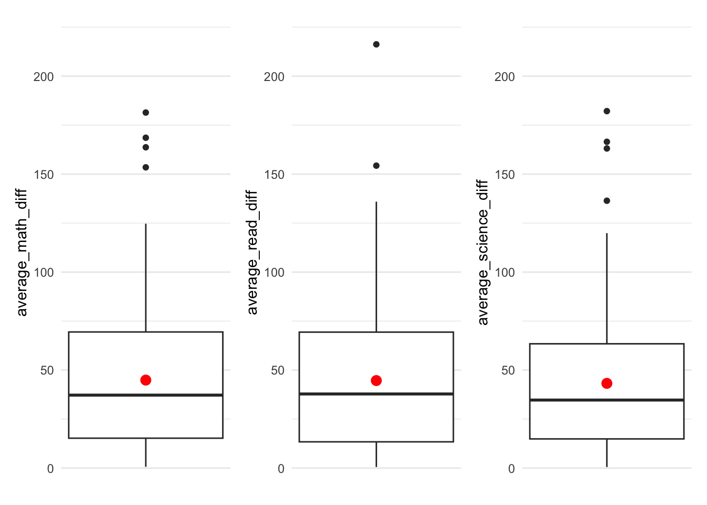

pacman::p_load(tidyverse, haven,
ggrepel, patchwork,
ggthemes, hrbrthemes, dplyr)Take-home Exercise 1
1. Project Overview
1.1. Setting the Scene
OECD education director Andreas Schleicher shared that “Singapore managed to achieve excellence without wide differences between children from wealthy and disadvantaged families”. Singapore’s Minister for Education shares the same belief, starting an “every school a good school” slogan. However, the population of Singapore disagrees that disparities don’t exist, especially between elite and neighborhood schools; students from higher socioeconomic status families and lower ones; and immigration and non-immigration families.
1.2. The Task
Based on the dataset provided by the 2022 Programme for International Student Assessment (PISA), the aim of this exercise is to utilize appropriate Exploratory Data Analysis (EDA) methods and ggplot2 functions to reveal:
the distribution of Singapore students’ performance in mathematics, reading, and science, and
the relationship between these performances with schools, gender and socioeconomic status of the students.
2. Data Preparation
2.1 Installing R packages
In this take-home exercise, these R packages will be used:
ggrepel: an R package provides geoms for ggplot2 to repel overlapping text labels
ggthemes: an R package provides some extra themes, geoms, and scales for ‘ggplot2’
hrbrthemes: an R package provides typography-centric themes and theme components for ggplot2
patchwork: an R package for preparing composite figure created using ggplot2
The code chunk used is as follows:
2.2 Importing PISA data
The code chunk below uses read_sas() of haven to import PISA data into R environment.
stu_qqq <- read_sas("data/cy08msp_stu_qqq.sas7bdat")To retrieve only relevant data (Singapore-based), the filter argument is used as seen in the code chunk below.
stu_qqq_SG <- stu_qqq %>%
filter(CNT == "SGP")Then, the write_rds function will generate a new .rds file to be used for consequent EDAs.
write_rds(stu_qqq_SG,
"data/stu_qqq_SG.rds")stu_qqq_SG <-
read_rds("data/stu_qqq_SG.rds")2.3 Data Wrangling
Few columns will be selected to be used for the EDA, these are:
CNTSCHID (school_ID),
ST004D01T (gender: 1 being female, 2 being male),
PV1MATH (math: Plausible value of student’s mathematic score),
PV1READ (read: Plausible value of student’s reading score),
PV1SCIE (scie: Plausible value of student’s science score).
Also, school_ID and gender variables are categorical in nature. These variables are casted as factors using as.factor(). For gender, the values are renamed to “Female” and “Male” for better readibiity.
Show code
stu_data <- stu_qqq_SG %>%
select(CNTSCHID, ST004D01T, PV1MATH, PV1READ, PV1SCIE) %>%
rename(c(school_ID = "CNTSCHID", math = "PV1MATH", read = "PV1READ", scie = "PV1SCIE",
gender = "ST004D01T"))
stu_data$school_ID <- as.factor(stu_data$school_ID)
stu_data$gender <- factor(stu_data$gender, levels = c(1, 2), labels = c("Female", "Male"))3. Exploratory Data Analysis
3.1 Student’s academic performance in relation to gender
To start, three boxplots are generated from the code chunks below to show the performance of students of both genders in three different subjects: Mathematics, Reading, and Science.
gendermath <- ggplot(data = stu_data,
aes(x = gender,
y = math)) +
geom_boxplot(color="grey50",
fill="#20c3f5") +
geom_point(stat="summary",
fun.y="mean",
colour ="red",
size=3) +
ylim(0,1000) +
labs(x = "", y = "Score", title = "Mathematics", axis.title.y = element_blank())genderread <- ggplot(data = stu_data,
aes(x = gender,
y = read)) +
geom_boxplot(color="grey50",
fill="#20c3f5") +
geom_point(stat="summary",
fun.y="mean",
colour ="red",
size=3) +
ylim(0,1000) +
labs(x = "", title = "Reading") +
theme(axis.text.y = element_blank(), axis.title.y = element_blank())gendersci <- ggplot(data = stu_data,
aes(x = gender,
y = scie)) +
geom_boxplot(color="grey50",
fill="#20c3f5") +
geom_point(stat="summary",
fun.y="mean",
colour ="red",
size=3) +
ylim(0,1000) +
labs(x = "", title = "Science") +
theme(axis.text.y = element_blank(), axis.title.y = element_blank())In order to show a side-by-side comparison of all 3 subjects’ boxplots, the patchwork package is utilized as shown in the code chunk below, where the three assigned boxplots can simply be added to each other.
gendermath + genderread + gendersci
Based on the boxplots, some observations can be made:
Male students outperforms the female students in Mathematics and Science, while the female students scored higher in Reading compared to male students.
The means and medians for each subject are approximately the same across both genders.
Many low-scoring outliers can be observed in Reading and Science subjects across both genders.
3.2 The comparison of students’ performance between schools
The code chunk below creates a new data set to find the average grades of each subject for each school by using the group_by() function.
stu_data_sch <- stu_data %>%
group_by(school_ID) %>%
summarise(
average_math = mean(math),
average_read = mean(read),
average_scie = mean(scie)) %>%
unique()Then, three histograms are created to show the distribution of average grades of schools for each subject as seen below.
Show code
schmath <- ggplot(data = stu_data_sch,
aes(x = average_math)) +
geom_histogram(bins=30,
color = "grey50",
fill = "#20c3f5") +
geom_vline(
aes(xintercept = median(average_math)),
colour="salmon",
linewidth = 0.8,
linetype = "dashed"
) +
annotate(
geom = "text",
x = 700,
y = 35,
label = paste("Median"),
color = "salmon"
) +
ylim(0, 35) +
xlim(300,900) +
labs(x = "", y = "Count", title = "Mathematics")
schread <- ggplot(data = stu_data_sch,
aes(x = average_read)) +
geom_histogram(bins=30,
color = "grey50",
fill = "#20c3f5") +
geom_vline(
aes(xintercept = median(average_read)),
colour="salmon",
linewidth = 0.7,
linetype = "dashed"
) +
annotate(
geom = "text",
x = 700,
y = 35,
label = paste("Median"),
color = "salmon"
) +
ylim(0, 35) +
xlim(300,900) +
labs(x = "Average Score", title = "Reading") +
theme(axis.text.y = element_blank(), axis.title.y = element_blank())
schsci <- ggplot(data = stu_data_sch,
aes(x = average_scie)) +
geom_histogram(bins=30,
color = "grey50",
fill = "#20c3f5") +
geom_vline(
aes(xintercept = median(average_scie)),
colour="salmon",
linewidth = 0.7,
linetype = "dashed"
) +
annotate(
geom = "text",
x = 700,
y = 35,
label = paste("Median"),
color = "salmon"
) +
ylim(0, 35) +
xlim(300,900) +
labs(x = "", title = "Science") +
theme(axis.text.y = element_blank(), axis.title.y = element_blank())
schmath + schread + schsci
To show if the difference of average grades between schools exist, the absolute value between the average grade of each school subtracted by the average grade of the whole school combined can be extracted as shown in the code chunk below.
stu_data_sch_diff <- stu_data_sch %>%
group_by(school_ID) %>%
mutate(average_math_diff = abs(mean(stu_qqq_SG$PV1MATH)-average_math),
average_science_diff = abs(mean(stu_qqq_SG$PV1SCIE)-average_scie),
average_read_diff = abs(mean(stu_qqq_SG$PV1READ)-average_read)) %>%
select(school_ID, average_math_diff, average_science_diff, average_read_diff) %>%
unique()The differences for each subject can then be plotted as seen below.
Show code
p1 <- ggplot(data = stu_data_sch_diff,
aes(y = average_math_diff)) +
geom_boxplot() +
stat_summary(aes(x = 0),
geom = "point",
fun.y = "mean",
colour = "red",
size = 3) +
xlim(c(-0.5,0.5)) +
ylim(c(0,220)) +
scale_x_continuous(NULL, breaks = NULL) +
theme_minimal()
p2 <- ggplot(data = stu_data_sch_diff,
aes(y = average_read_diff)) +
geom_boxplot(width = 0.1) +
stat_summary(aes(x = 0),
geom = "point",
fun.y = "mean",
colour = "red",
size = 3) +
xlim(c(-0.5,0.5)) +
ylim(c(0,220)) +
scale_x_continuous(NULL, breaks = NULL) +
theme_minimal()
p3 <- ggplot(data = stu_data_sch_diff,
aes(y = average_science_diff)) +
geom_boxplot(width = 0.1) +
stat_summary(aes(x = 0),
geom = "point",
fun.y = "mean",
colour = "red",
size = 3) +
xlim(c(-0.5,0.5)) +
ylim(c(0,220)) +
scale_x_continuous(NULL, breaks = NULL) +
theme_minimal()
p1 + p2 + p3
Based on the boxplots, some observations can be made:
All three subjects show slight amount of disparity in average grades between schools, with the average difference value around 50.
Some outliers are detected in all three boxplots, showing that a few schools in Singapore either excels or underperforms in terms of the respective subjects.